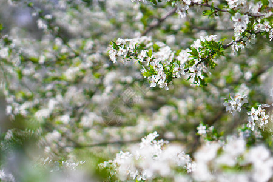
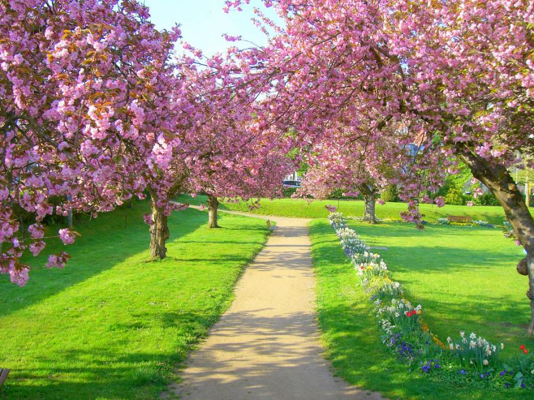
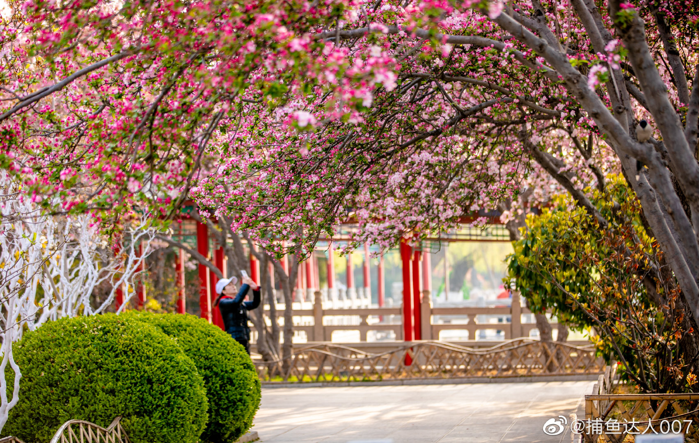

春风轻拂大地，冰雪消融，草木抽芽吐绿，桃花杏花次第绽放。暖阳洒满枝头，溪流叮咚流淌，万物在生机中苏醒，处处洋溢着清新与希望。
春日来临，暖风拂面，细雨润物无声。柳丝轻扬，百花争艳，蜂蝶翩跹飞舞，田野焕发出新绿，一派生机勃勃、温柔明媚的动人景象。
枫叶是秋日最张扬的画家，将整座山谷晕染成一片火红，有的叶片边缘还留着夏末的翠绿，像是特意勾勒的金边；
鸡爪槭则偏爱热烈的橙黄，远远望去，仿佛燃烧的火焰在枝头跳跃。
偶尔可见几株松柏依然挺立着苍绿，在绚烂的秋景中添了几分沉静，形成奇妙的色彩平衡。
山涧的溪流比夏日更显清澈，水底的鹅卵石上附着薄薄的青苔，几片红叶随波漂流，像是写给远方的信笺。
田野里是另一番丰收的景致。金黄的稻田在风中翻涌着波浪，沉甸甸的稻穗垂着脑袋，仿佛在向养育它们的土地鞠躬。
田埂边的野菊开得正盛，白的、黄的、紫的，星星点点缀在枯草间，给大地添了几分俏皮。
农人戴着草帽穿梭在田间，镰刀划过稻秆的 “唰唰” 声，与远处传来的鸡鸣犬吠交织在一起，构成最质朴的秋日乐章。


